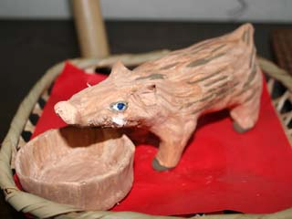
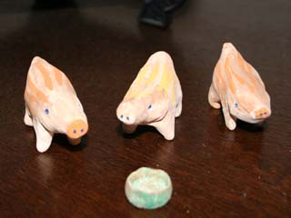
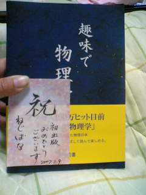

2007年1月1日
明けましておめでとうございます。
今年もよろしくお願いします。


これは私が紙粘土で作ったものです。
数年前に教材を作った余りでサルの置物を作って以来、
毎年、実家の玄関を飾る干支の置物を作ることが期待され、習慣になっています。
2007年1月2日
妻と息子が、妻の実家から私の実家へ移動。
さあ、これから忙しくなるぞ。
本の原稿のレイアウト作業がようやく進み始めたところだというのに。
作業環境を整えるだけで何だかんだと時間を食ってしまった。
こちらへ持ってきた原稿が最新版でないことに気付いて、少々落胆。
2007年1月3日
息子と遊びつつ、妻のご機嫌を取りつつ、
空き時間を見つけてはパソコンのある部屋へと飛び込む。
しかし息子はすぐに追いかけてくるのだ。
おもちゃが欲しくて、凧を買ってきた。
私が遊ぶためだ。
風は吹かず。
2007年1月4日
凧揚げに行って来た。
糸が伸びきるところまで飛ばせたので私は満足した。
太陽の周りに円い虹が架かっていて、
「おお、吉兆だ」と喜んで見ていたのだが、
息子や妻はまぶしいからと言って見ようともせず・・・。
2007年1月5日
帰省先から戻る。
現在、どちらの両親からも遠く離れた場所に住んでいるのは、
両者から受けている世継ぎ問題の圧力をかわすのに効果的ではあるのだが、
近いうちにこの問題に決着を付けないといけない。
現在、すべてをうまく収めるべく画策中。
一家の長として将来の生活のことを真剣に考えているのだ。
2007年1月6日
実家で作業した分と最新版とを突き合わせて修正作業。
このお陰で思わぬ誤植に気付けたりして、
最新版を忘れて行ったのは結果的には良かったと思える。
2007年1月7日
本の原稿のレイアウトを終えて、出版社へ送付。
原稿が手元を離れると途端に不安になる。
2007年1月8日
今日から仕事開始。
きっと休み中よりサイトの更新がはかどるぞ。
2007年1月11日
脳内麻薬が切れたようだ。
万能感が薄れてきている。
2007年1月12日
あんなに難解に思えていた解析力学の教科書が、
久しぶりに眺めたら分かり易いものに見えるようになっていた。
どの部分を読まなくて良いかが分かったお陰で、
全体のつながりが見渡せるようになったせいだろう。
「こんな本は役に立たない」と思っていたのに、
実はよく出来た本である事を認めなくちゃいけない悔しい瞬間だ。
2007年1月17日
初校刷りが明日出来上がってくるとの連絡を受けた。
近々、日程や表紙デザインに関する打ち合わせが行われる。
もはや私の不手際で出版社に迷惑をかける事には
ならないだろうから、宣伝を開始しようと思う。
これまで執筆を裏で支え、
私の細かい要求を忍耐して聞いて下さった出版社の名前は・・・
「理工図書」様である。
本のタイトルは、打ち合わせの後に、
トップページにて発表しようと思う。
売れるかどうかの判断なんて、
もう自分には正常には出来ない心理状態である。
2007年1月20日
出版社の方と直接会って初校刷りを頂き、細かい打ち合わせをした。
そして私のやるべき事がまだまだ多いのを知った。
普通なら印刷会社の方で「適当に」やってくれるらしいのだが、
「初めからほぼ完成した原稿」を見て、
「この人にはこだわりがあって自分で出来るはずだ、安易に手を入れられない」と
言われてしまったのだという。
「いや、そこは別にお任せのつもりでおりましたのに・・・」
「いや、必ずお考えがあるはずです、やって下さい。」
と言う具合だ。
あまりに無謀なので、
時々この本については諦められてるんじゃないかという疑いも生じる。
印刷位置を何ミリずらすかなんて指示まで任されてしまった。
怒って・・・ないよね・・・？
何とありがたいことに、表紙カバーのデザインについても私にやらせて貰えることになった。
デザイナーさんの参考にしてもらおうと、
表紙イメージへのこだわりを文章で書き送らせてもらっただけなのだが。
いや、こちらはデザインについてもド素人ですよ！？
しかしかつてはゲーム界でクリエイターを目指した私である。
血が騒ぐというものだ。
この出版社に決めるにあたっては、
直接編集さんに会う前からインスピレーションがあったのだが、
本当にここで良かったと思う。
ところで、出版社としては表紙のどこか、
サブタイトルにでも「EMANの～」というのが
分かるように入れて欲しいとのことだった。
しかし断った。
ネットに関係なく読んでもらいたいというこだわりがあるためである。
（こんな調子ですみません。 聞き入れて下さって本当に有難うございます。）
宣伝は帯の方でやって下さる分には全く構いませんと伝えた。
とうとうサイトのトップページでもタイトルを公表し、宣伝を開始。
うまく進めば2月25日頃には店頭に並ぶくらいを予定していると言われたのだが、
表紙の色校正なんてのもあるようだし、何が起こるか分からないので「3月上旬発売予定」としておいた。
2007年1月24日
校正のためにすごい勢いで全体を読み返している。
薄々勘付いてはいたが、
この本の読者は、これを読み物として一気に読もうとすると、気絶するかも知れない。
密度は教科書並みに高いにも関わらず、とりあえず読めてしまうので、
知らず知らずの内に体力を奪われる惧れがある。
しかも小説に喩えるならば、すっきりしない終わり方だ。
今日はちょっと疲れてるな。
2007年1月27日
早朝に目が覚めてしまい作業に励んだ結果、何とか校正終了。
午後に原稿を郵送できた。
この作業が済んで、不安が少し自信に変わった。
意外な誤字脱字、分かりにくい言い回しがこの段階でもまだ見付かるものだ。
例えば、かぎカッコが表示されていないところがあったので調べてみたら、
なんと元データのかぎカッコが半角になっていたとか。
検索をかけたらそんなのがあちこちに見付かった。
この作業の他に、カバーに隠れる方の表紙のデザインをしたり、
扉ページのデザインをしたり、著者紹介の部分を書いたり、
定規を持ってきて印刷位置を検討したり、
（・・・今まで気付かなかったが、大抵の教科書では何も考えずに中央揃えになっていて、
言われてみればちょっと読みにくい気もしないでもない・・・）
また、参考文献の項目を追加したりした。
とにかく、本体に関わる作業はこれで終了だと思う。
隅から隅まで自分の本という感じである。
2007年1月29日
表紙カバーデザインに集中している。
これが終われば、またサイトの更新に時間を回せるだろう。
フォントの選択が気になって、色んなメーカーのものを調べ、
商業利用規定なども調べ・・・思い切ってある会社のセットを
購入しようとまで考えたわけだが、
初めに試した手持ちのフォントと比べてみたらそっちの方がよく見えてきた、という
「ねずみの嫁入り」のような結末。
迷いだすときりがないし、慣れると良く見えてきてしまうものだ。
2007年1月30日
出版社名を「理工図書」にするか「りこう図書」にするかで相談があった。
見た目だけの違いではない。
本の流通では、一般教養書として大量に出回るか、
専門書として大型書店の専門書の棚に並ぶかが、
出版社名によっておおよそ決まる仕組みだと言う。
「りこう図書」というのは一般教養書用に作った新ブランドであるわけだ。
2007年1月31日
昨日の件については、苦しい選択ではあったが、
覚悟を決めて「理工図書」として出して下さいと返事をしておいた。
しかし私が返事をする前に出版社内でも会議があって、
「理工図書」で行きましょうという結論に達していたらしい。
ただし、一般書としても流通してもらえるように、
営業の方で書店に働きかけてくれるとのことだ。
平積みのためのポップも準備中だという。
「本気」を感じます。
こんなに良くしてもらって、本当に感謝しています。
2007年2月1日
昨晩、カバーデザインを仕上げて、出版社に送った。
インクジェット年賀はがきが大量に余っていたので、
それを使って何度もテストプリントを繰り返してみたのではあるが、
やや不満の残る仕上がりだ。
我が家の廉価版プリンタのせいだったらいいのだが。
とにかくこれでやるべきことは終わった。
2007年2月2日
トップページの宣伝で、これまで256ページと書いてあったのを、257ページに変更する。
これは配置の都合により、索引の前に白紙ページを挟んだからである。
本当は扉や前書きや目次や奥付けを合わせると272ページある。
これは、本の構造上、16の倍数にすると作りやすいため。
ではなぜ257ページと公表するかと言うと、
アマゾンなんかではページが振ってある最後の数字を公表しているようなので、
それに倣っただけのことである。
というわけで、結構分厚い。
ページ数を考えると価格を下げるのは厳しいとのことだが、頑張って下さっているようだ。
などと書いていたらメールが来た。
価格は1800円の予定だそうだ。
2007年2月6日
後は本が出るのを待つだけか、と安心していたら、近々第2校が送られてくるらしい。
実はもう見たくないんだが・・・。
まぁ、前に赤ペンを沢山入れさせてもらったから仕方ないか。
しかもほとんどはこちらのミスの修正とか書き足しだったし。
本当に3月上旬になるんじゃないか？
2007年2月10日
第2校が届いた。
はりきって封を開けてページをめくってみたが、うーん、何だろう、
急に気恥ずかしくなってきた。
こんなものを世に出すのだろうか。
それに、何だか前より印刷の品質が落ちてる気がする。
コピーだからかな？
2007年2月12日
今まで「kinematics」が静力学だと思っていたが、静力学は「statics」だった。
こんな誤解がそのまま本になるところだった。
第2校の機会があって本当に助かった。
しかし、いまさら大きな変更はできないし、どう直したらいい？
2007年2月13日
あまり出版社を待たせてはいられない。
真剣に校正に取り組む。
やっと気付いたが、どうやら、図の文字の色に改変が加えられてるようだ。
品質が落ちたように感じた原因はこれか。
前より読みにくくなったと思うけど、意図は何だろう。
さらに図の中に新たな文字化けがかなり加わっている。
おいおい、今さらそこらへんを変えるのかよー。
あれれ、今気付いたが、本文中の強調文字の書体も全て変わっていて、
全然強調されていないぞ。
前に感じた気恥ずかしさの原因はこれだ。
見た目にメリハリがなくなっているせいだ。
これじゃあ、売れまい。
2007年2月14日
結局、校正作業は朝の6時頃にまで及んだ。
金曜日には届くようにすると出版社に連絡しておいたので、
もう一日伸ばしても良かったのだろうが、
例の「静力学」の直しも気になっていて、
とても眠れるどころではなかった。
2時間だけ寝て、出勤途中に速達で原稿を送り出してきた。
やれやれ、一段落だ。
実は、校正に取り掛かったのは午前1時頃だった。
その前に他の作業をしており、それも仕上げることができた。
気になっていた大きな仕事が両方とも片付いたので達成感で一杯だ。
2007年2月15日
第2校の印刷がおかしかったのは、印刷会社の方のコンピュータ操作のミスだそうで、
Win と Mac の違いでそうなったらしい。
出版社の人が温厚な私の代わりに怒ってくれて、私には謝りのメールが来た。
本作りは大変です。
どちらの会社の人にも感謝しています。
よろしくお願いしますね。
2007年2月15日
ミリオンセラーにならんかなー。(ポケ～）
2007年2月15日
早く普段どおりの更新頻度に戻りたいなぁ。 物理やりたい。
2007年2月17日
表紙カバーの色校正が届いた。
最も心配していた部分がうまく表現できていたので、しばらく上機嫌で眺め、
「これで行こう」と一度は封筒に戻したのだった。
しかし、夜中に冷静になって見直してみると、私が元々意図していた色とは違って暗すぎるように思える。
こちらでの印刷結果を郵送して、やり直してもらうことにした。
他にも、モニターで見る拡大画像でならはっきりと分かる質感がまったく出ていなかったりするのは、
業者の印刷の解像度に期待し過ぎたせいだろうか。
また、効果を強調し過ぎて素人っぽさが目立ってしまっていたりするのも少々恥ずかしいところだが、
これ以上手間をかけさせるのも申し訳ないので、このままで行ってみよう。
ひょっとしたら結果的にうまく行くかも知れない。
モニターのガンマ補正などもして作ったデータなのだが、
やはり意図した色を伝えるのは難しいものなんだなぁ。
2007年2月23日
「投げ銭」には長いことお世話になったが、トップページから外した。
その日に、投げ銭が振り込まれたのは驚きだった。
2007年2月26日
妻が年明け頃からレメディ（ホメオパシー薬）にはまっている。
科学を説く私のすぐ足元でこんなことが行われるのは複雑な心境だ。
私の体調が悪いと嬉々として実験台にする。
私はどうせただの砂糖粒だと考えているので、付き合ってやる。
たまに、「お医者さんごっこは楽しいかい？」と
皮肉を言ってやると、「うん」と元気に答える。
こういう「不確かなもの」は人間に必要なのかも知れない。
身の回りには科学で裏打ちされた、
使い方が決められたもので一杯だ。
安全なブラックボックスばかりで、
それ以外の使い方が許されない。
国民の科学離れが問題になっているが、
人間は本来、実験好きなのかも知れない。
2007年2月27日
私が妻のコロコロ変わる非科学的趣味（今はレメディ）を
認めているのは、妻の精神衛生上、大変有効だと認めるからだ。
「あなた、最近、口臭がなくなったね。」
なんて言って、避けないでくれるようになったのは、
ありがたい副次効果だ。
2007年3月1日
妻の趣味で困るのは、手段が目的に化けるところだ。
すでに「ふき料理」が花粉症に有効なのは私も認めているのに、
「花粉症に効くっぽいレメディ」があるのを見つけるや、
洗濯物の室内干しなどの有効な手段を全て放棄してくれる。
お陰でまた症状がひどくなった。
実はホメオパシーの教義については私の方が詳しいので、
「この薬、200cじゃないか、使い方間違ってないか」などと
たまに「指導」を入れるのである。
2007年3月3日
本の見本刷りが届いた！
仕上がりに不安があったので急いで箱を開ける気にならず、慎重に開ける・・・。
すげーっ。
両面印刷にするとこんなにコンパクトになるんだ。
絵が少ないのを気にしていたが、思ったほど単調な雰囲気でもない。
全てが意図通りではないが、それはかえって良いかも。
午後になって、図の一つに意図しないプリントミスが見付かり、少々がっかり。
2007年3月4日
本を友人たちに配った。
とても好評だったので、嬉しくなった。
昨晩、一人で見てるだけでは、感動も薄らいでしまっていたが、
こういう嬉しさは人と分け合う事で何倍にもなるんだなぁ。
プレゼントのつもりで集まりに持って行ったわけだが、
予定外の人からも、分けてくれ、とその場で代金を頂いたのだった。
で、郵送でプレゼントするつもりだった友人たちの分まで、
すでに完売となってしまった。
ネットで大量注文入れるぞー。
2007年3月7日
まだ発売前の予約段階だが、昨晩からアマゾンランキングがぐんぐん上がってきた。
もともと何とかして2000番以内に食い込めれば、と思っていたので驚きだった。
午前11時には300番代にまで入ったが、上位の壁は厚いようだ。
2007年3月8日
去年10月26日の日記に書いた親友が、商談のついでに寄ってくれることになった。
今夜は我が家に宿泊。
高校の時に一度だけ会ったから、18年ぶりの再会か。
奇しくも、私の誕生日であり、出版初日であり、こんな素晴らしいプレゼントが他にあろうか。
2007年3月9日
この日のために有休を取ってあったので、親友と一日遊ぶ。
市内各地を転々と移動しながら交わした議論の数々は、多分、これからの私の思想に影響を与えるだろう。
彼の思い描く世界を私の理想像に取り込んで、是非とも実現したいと思わせてくれるのだ。
2007年3月10日
ねじばなさんからお祝いの写真。

2007年3月11日
さあ、アマゾンも在庫切れだ。
一度は追加で入荷してくれた感じがあるようだけど、
もう取次店も弾切れってことかな？
アマゾンは在庫切れになると、
ランキングがどんどん下がるから嫌なんだよなー。
買いたくても買えない状態なんだから仕方ないじゃん。
2007年3月12日
増刷って、どういうプロセスで決まるんだろう？
一般書店からの返却を集計して売れ行き具合を測ったりするのだとしたら、
まだまだ、各地の書店には行き渡らないだろうなぁ。
それほど焦らなくてもいいのだけれど。
それよりネット以外の書店でも長期的に確実に売れて欲しい。
そのためには、読んでくれた人の評価が大事なんだ。
2007年3月12日
仕事帰りに見て来たが、うちの近所の書店にはまだないようだ。
2007年3月13日
ところで、こっそり言うが、レメディーって、15分くらいなのだが、確かに効くのだ。
おかしな副作用が出ることもある。 それも15分くらいで収まるが。
プラシーボかな？
二重盲検にパスしたとかも書かれてるが、
専門の医学誌でも調べないことには信憑性が分からないし・・・。
人によって作用の出方が違うともなれば、科学の手法では調べにくいだろう。
2007年3月13日
出版社の在庫が切れかかっているので、増刷しないと対処できないそうだ。
増刷が決まったら大きく「増刷決定！」と書いてアピールしようと思っていたが、この状況は微妙だ。
出荷した本がまだあちこちの書店の倉庫に眠ったままの可能性もある。
まだこのサイト以外で宣伝らしいことはしてないしなぁ。
2007年3月18日
Amazon における自著の扱いは実によろしくない。
在庫を2冊程度にとどめたいためか、毎日午後5時頃に2冊ずつ入荷する。
その2冊は2時間程度で売り切れる。
すると、翌日まで購入手続きが取れない状態が続く。
「通常1～2週間以内に発送」とかいう状態でさえない。
まぁ、「Amazon八分」として良く知られた症状ではあるのだが。
そこが問題だ。
その間、ランキングは下がり続ける。
週末は出版社が休みであるせいか、入荷しない状態が続く。
それに目を付けた業者が、自著をほぼ2倍の額で出品する。
正常な定価の表示はされない。
これでは自著が馬鹿高いイメージが付いてしまうではないか。
さらに増刷もされておらず、人気もないような印象だ。
実はここでは
理工系の週刊ランキング 6 位に入っているのである。
これは嬉しい！
2007年3月19日
出版社が「週刊朝日」に宣伝を入れていて下さったことを今日知った。
しかし先週発売の号なので、すでに書店にはなかった。
後で送って下さるそうだ。
妻の実家から電話があった。
近くの書店に本がごそっと並んでいたそうだ。
こういう普通の書店にあったよと聞くのが嬉しい。
また、義母の塾の生徒さんが読んで、面白いと言って下さったそうだ。
こういう話を聞くのも嬉しい。
今度、「Fuji Sankei Business i.」という新聞（旧日本工業新聞・定価100円）の
4月2日版4月7日版16面に、私自身の文章による本の宣伝を顔写真つきで載せてもらえることになっている。
やっとその原稿を仕上げて肩の荷が下りた。
主張があり過ぎるので、字数制限があるのを書くのは難しい。
どうやらWeb 版の
そのコーナーは
紙面とは 2 週間ほどの差をあけて載るらしい。
2007年3月22日
19日の日記で、4月2日の新聞に載ると書いたが、日付訂正。
4月7日に変更だそうだ。
理由は、4月からの紙面刷新のため。
2007年3月26日
久々にコンテンツの追加ができて嬉しい。
最近、本の売れ行きばかり気に掛けてサボっているのではないかと、
きっとそう思われているに違いないと心配していた。
早く続きを書かないと読者離れを起こしそうだし。
しかしコツコツと書き続けてはいたのである。
少々ペースが落ちているのは家族に気を遣ってのことである。
週末にゆっくり本を読む時間さえない。
2007年4月6日
明日、新聞に記事が載る！
しかし、こんな、夕方ぎりぎりになって Amazon が品切れを起こすなんて！
しかも週末だ。
(*ﾟﾛﾟ)ﾊｯ!! やはり陰謀に違いない！
2007年4月7日
久々の独身生活だ。
数日前から、妻と息子は実家へ田植えの準備の手伝いに行っている。
寝過ごしたりしないように、深夜までサイト更新するのは控え、快眠を楽しんだ。
そして、今日は待ちに待った土曜。
一人暮らしの不便を喜んで堪えてきたのもこの日の為だ。
洗濯や掃除、買い物など、身の回りの事を全て整え、さぁこれから、と言う時に、
彼らは予告無く帰ってきた。
（あれ？・・・月曜帰宅の予定だったはず）
・・・というわけで、サイトの更新が遅れてまして済みません。
しかも妻は非常に疲れてイライラしており、
おまけに向こうでひいた風邪まで持って帰って来たのだった。
2007年4月8日
「本を書いている」という大義名分を失った為に、
自宅で物理の時間を取ることがとても難しくなっている。
深夜2時か3時頃まで自由になる時間があるのだが、
とても日中ほどの集中力は残っていない。
2007年4月10日
サイトの更新を効率よくするために、
昨晩は諦めて早く寝て、朝早くに起き出してきたわけだが、
妻も息子もいっしょに起きてきた。
妻の機嫌がとても良い・・・。
2007年4月11日
アーマーゾーンー！！
そろそろ再入荷してくれー。
せっかく新聞に載ったのにー。
Web版にも載ったのにー。
2007年4月16日
教科書め、つまらぬ事で散々悩ませやがった。
しかしまた一つ賢くなったぞ。
分かってしまうとつまらぬ事だが、
ようやく得た成果なので記事に反映させたい。
（汎関数微分の記号の定義）
2007年4月16日（深夜）
今、汎関数微分の扱いの全体像を知りたいと思っている。
一つのことがすっきり分かり始めると、
他の教科書がその部分についてどう説明しているかが気になったりする。
本棚を漁ってみるが、あらまぁ・・・、
それについて触れている教科書を私は持っていないようだ。
いや、一つ見つけた・・・。
ん？ 何じゃこりゃ？
今だから分かるが、全然説明になってないぞ。
私はこれが入門書だと思って、
最低限これくらい読めなきゃ他もきっと理解できまいと、
何度も何度も読んできたわけだが、
行間にどれだけ多くのことが省かれているかが、今分かるようになった。
そりゃあ端折り過ぎだわ。
入門者向けだからと不確かな説明でごまかさないで、
説明が難しいならここは難しいところだと正直に書いておいて欲しいものだ。
そうしたら覚悟してそこだけ他の本を探して勉強するのに。
これを使って勉強していた昔の私が先へ進めなかったのは当然だろう。
いや、実際は数式を頼りに読み進んではいたわけだが、
この説明で理解できるほどの下地が出来ていたとは思えない。
で、ちょっと他の教科書を探す必要がありそうだ。
2007年4月18日
最近、アクセスが非常に増えている。
これを無言の応援だと信じてがんばろう。
ありがとう。
2007年4月22日
出張やら何やらで、物理に関わるまとまった時間が取れないでいる。
細切れの時間を使って頭の中でいつも考察を進めているが、
紙とペンを取り出して集中するのが許されない環境にある。
だからいつも初めから考え直しで、毎回同じとこら辺でつまづく。
それでも・・・。
新しい教科書を探そうと思っていたが、
自力で何とかなりそうな感じがしてきた。
2007年4月26日
地味な記事を準備するつまらなさと戦っている。
本当にだらだらと面倒くさいところだが、画期的な説明が出来るわけでもない。
だが、これなしには先の話に繋がらない。
専門書の導入部分などにはあからさまにそういう態度が
現れているものがあって、
やっつけ仕事的な解説で済まされていたりする。
私には読者のつまづきを最小限にとどめたいというこだわりがあり、
何としてでも読んで楽しくなるように、スマートにまとめたいと思う。
それが、まとまらんのだ。
2007年5月7日
楽しみにしていたゴールデンウィークは
意外なトラブルから始まり、
終わりまで、とても物理に心を向けられる状態ではなかった。
いや、頭が回らなかったのは風邪っぽかったせいかも知れない。
それでも色んな楽しみを見つけて過ごした。
2007年5月10日
最近、好奇心が希薄になってきている。
大人とはこんなものか。
大切な能力の一つが失われてきたように感じる。
2007年5月12日
お子様ランチのおまけでもらったブーメランを投げてみる。
子供そっちのけで何度も試した。
ウェブで投げ方を調べてみても、うまく行かない。
形状を見て考えてみたが、偽物の「飛ばないブーメラン」だと判明した。
・・・。
分かる・・・事情は分かるけれども・・・。
2007年5月14日
地味な記事だと思っていたが、
思い切って途中をばっさり切り捨てたり、
説明範囲を広げてみたりという苦労を重ねる内に
何とか役に立ちそうな記事に仕上がってきた。
しかも、ちょっと読者のためを思って付け足した説明が、
私が前から抱いていた別の疑問の答えに
突如つながったのであった。
全く理解できなかったはずのことを、
何でもないことのように自分がさらりと答えてしまう不思議な瞬間だった。
2007年5月15日
今書いている内容とその続きの話が頭の中で一段落しそうであり、
私が期待した方面には繋がっていないことが分かりつつある。
その分、思考への負担は減ったので、それはそれで良いことだ。
すると次の目標を見つけないといけないのだが、
ハミルトンヤコビの方程式の周辺の事情を
整理することになるだろうか・・・。
2007年5月16日
波風を立てないでやり過ごそうか、
それとも、たとえ自分の利益が損なわれ、
アイツは馬鹿だと罵られることになろうとも、
自分が正しいと思うことを主張しようか。
そういうことで悩むことが増えた。
最近、大人の考え方をするようになってきた。
しかし、世の中とうまくやって行けない
子供的な自分が、また自分の中で暴れ始めている。
醜態をさらしていいだろうか。
それとも多少汚く、ずる賢く、
見た目綺麗に生きようか。
2007年5月18日
変なことを書いてご心配をお掛けしてしまった。
結局、私は波風を立てる方の決心をした。
しかし準備をしている間に問題は勝手に消滅してしまった。
2007年5月26日
息子が屋外の給水タンク室のブロック壁と
隣の住宅のブロック塀の隙間に上から落ちて、
出られなくなった。
助けを求める泣き声に気付いて救助に
駆けつけたが、うまく下まで落ちたものだ。
頭がピッタリ挟まって、動けなくなっていた。
とりあえず隙間から手を握って落ち着かせ、
どうやって取り出してやろうかと考えている内に、
うまい具合に自力で脱出してきた。
妻が叱った。
「お前は腕が弱い！」
そしてもう一度落ちた状況を再現させて、
落ちそうな時には体全体を使って支えるのだ、
と方法を教えていた。
一緒に遊んでいた子供たちにも、ここで遊んではいけません、
なんて一言も言わない。
さすが我が妻。
これぞ広江家流。
しかし近所からは非常識だと思われている可能性がある。
2007年5月27日
友人（高校生）の誕生日プレゼントのために「Xジャイロ」ってのを買った。
通販で 2 個セットだったので、一つは私のだ。
最初は「なんだこの程度か？」とがっかりしたのだが、
信じて少し練習したらすごいことになった。
いや、今日は風が強いからあまり条件は良くない。
駐車場なんかじゃなくて、もっと広いところで遊びたいものだ。
2007年6月2日
近所の子供たちと靴飛ばしや水風船で遊んだ。
午後は森の公園へ出かけたが、
「Xジャイロ」は息子にほぼ占有されてしまって、
あまり練習にならなかった。
（いや、それで良かった。 翌日から肩が痛くなった。）
2007年6月3日
最近、自分の手の届かないところで起きる問題のために心がつらい。
どうして自分はここ数日、
日本の教育問題の事でこんなに真剣に考え続けてるんだろうと
自分自身に何度も問い掛けていたが、
なるほど、そのことが関係していそうだ。
2007年6月4日
出版社から続きを書かないか、との打診が来た。
そこそこ売れ続けていると聞いて安心した。
2007年6月5日
今後の記事をどう進めようかと
久しぶりに量子力学の教科書を開いてみた。
ところが難解だと思っていた数ページが見当たらない。
場の理論への導入として記事にしようと思っていた部分だ。
どうやら、今、解析力学の復習に過ぎないということで
軽く読み飛ばせている部分がそれだったようだ。
何だかあっけない。
場の理論の入り口の意外と近くに立てている気がしてきた。
2007年6月8日
出版社に返事を書き、続編を書くことを約束した。
タイトルは「趣味で相対論」になると思う。
目標は今年中に仕上げること。
2007年6月29日
最近、政治がメチャメチャなので心配で仕方ない。
その背景について掘り下げて考える時間が欲しい。
面倒な調整ごとは賢い彼らに任せておけば大丈夫だろう、
なんて考えでずっと来たが、
ここで私が何もせずに日々の暮らしを続けているのは、
社会への責任を果たしていない気がするのである。
はっきり言えば、物理をやっている場合じゃない。
本当は政治や思想なんてクソ喰らえだと思っている。
しかし私はやるべきことをやった上で安心して物理をやりたいのだ。
2007年7月2日
どうしてこんなにやる気が失せてしまっているのか、分析中である。
確かにめちゃめちゃ疲れている。
朝、仕事に行きたくないと思う。
先週はそういう理由で一日休んだ。
湿気のせいかも知れない。
この妙に重苦しい空気は家族にまで及んでおり、何とか対策せねばと思っている。
妻は私に早く元気が出るようにと願ってくれてはいるものの、
実は私が物理をやっていないときの方が嬉しそうだと、
私は気付いてしまっている。
「閉塞感」なんて言葉が世の中に流行りだした。
2007年7月3日
不思議なことになぜか非常に調子がいい。
脳内の仮想人格との会話が知らぬ間に回復していることに気付いた。
この会話がないと、私は魂が抜けたようになるのだった。
昨晩は深夜までごそごそと起きていて寝不足のはずなのに。
代わりに今朝の妻の機嫌は最悪だった。
2007年7月4日
久々にいい本を読んだ。
岡田斗司夫さんの『「世界征服」は可能か？ 』という本である。
まぁ、元々、卒業文集の将来の夢として「王」と書いた私だから
ツボにはまったのであって、他の人が良いと思うかは保証できない。
今まさに人生の舵を切ろうとしていた私だが、少し頭を冷やせと殴られたような気分だ。
これから私のしようとしていることが、
「世界征服の野望」と同質であることに気付かせてくれて、
人生設計を考え直す必要に迫られた。
本の終盤に近付く頃にはすっかり空虚感に見舞われて、じゃあ、私はそれをやめたら何をしたらいいのだろうか？と考え始めていたわけだが、
なるほど、この本は話に聞いていた通り、面白い締めくくり方をしている。
私の心の中の城をすっかり崩しておいて、
似たようなものを瞬時に再構築させるとは・・・。
ここに書かれているような美学を背景に持つのも悪くないな、と勇気付けられたのだった。 』という本である。
まぁ、元々、卒業文集の将来の夢として「王」と書いた私だから
ツボにはまったのであって、他の人が良いと思うかは保証できない。
今まさに人生の舵を切ろうとしていた私だが、少し頭を冷やせと殴られたような気分だ。
これから私のしようとしていることが、
「世界征服の野望」と同質であることに気付かせてくれて、
人生設計を考え直す必要に迫られた。
本の終盤に近付く頃にはすっかり空虚感に見舞われて、じゃあ、私はそれをやめたら何をしたらいいのだろうか？と考え始めていたわけだが、
なるほど、この本は話に聞いていた通り、面白い締めくくり方をしている。
私の心の中の城をすっかり崩しておいて、
似たようなものを瞬時に再構築させるとは・・・。
ここに書かれているような美学を背景に持つのも悪くないな、と勇気付けられたのだった。
2007年7月4日
岡田斗司夫さんというのは、
昔から、いつの日か私が表現したいな、と思っていることを、
それより遥かに高いクォリティで、
思った以上に早期に実現してくれるので、
悔しさを通り越して清々しく思える。
数少ない私のヒーローの一人なのである。
ちなみに、私は『世界征服をした後で使う経済学』
という本をいつか書こうとひそかに計画していたのだ。
もう真似したみたいに思われるから、ばらしちゃうよ。
誰か、このテーマで書いてもいいぞ！
2007年7月4日
私がこのサイトを始めたときには「破壊的」な意志があった。
既存のものをぶち壊してやろうと思っていた。
ところが、ああ、最近の態度は、何と「建設的」なのだろう。
手を取り合って、何か一つの同じものを作ろうとしている。
私は時代に追い付かれており、体制派になろうとしている。
これまで専門家が作る他の物理サイトとの距離を置いて来たのは、
別に彼らを嫌っていたわけではなく、
「彼らに迷惑を掛けたくない」という心遣いからだった。
「このサイトは不真面目であり、自覚もあり、
ひっそり自分勝手にやらせてもらう」という気持ちの表れだった。
私は今は次を目指すことはしない。
「次」は今建設中であり、その先は私にはまだ読めていない。
時代がそう進むというのなら、私は逆らって進ませてもらおうか。
そういうのが一人くらい生き残ってたっていいだろう。
2007年7月5日
私は世の中に対して言いたい文句やらが一杯あるのだが、
言っても自分に跳ね返ってくるだけなので、
黙っているということが増えた。
もし言ってしまえばそれについて反論されるだろうが、
「そんなこと知るか、俺がその問題の管理人かよ」と言い返したくなる。
しかしそもそも管理人でもないのに偉そうに口を出すから、
そこが他人の癪に障って叩かれるのだろう。
2007年7月5日
最近の私の圧迫された気持ちの正体が見えてきた。
要するに、私は『ブログがうらやましくて仕方ない』のだ。
一方で私はブログの存在を憎んでもいる。
そして、ああ、しかし、こんな個人的な心の叫びはブログにでも書いたらいい内容なのだ。
こんなつまらぬことはここに書くべきじゃない。
そうやって、自分を抑え込んで来た。
私は今、駄文だろうと何だろうと、
自分を表現するものを書き殴りたくて仕方ないのだ。
しかし私は「残すべき価値があるかどうか」で
判断しようとしている。
そこに最近のウェブの考え方とのぶつかりがある。
つまり、「情報はまとめなくていい、垂れ流せ、
後は検索エンジンがやってくれる」という風潮だ。
何が Web 2.0 だ。
私は自分の意思で分類し、まとめ、きれいに並べてやる！
2007年7月5日
今日は『フューチャリスト宣言 』という本を一気に読んだ。
なんだ？ これは俺がいつも考えて、時々は一部を発表しているようなことじゃないか。
俺はここ数年、読書をしていなかったので、さぞかし世の中に遅れを取っているだろうと心配していたが、
そんな情報源に頼らなくともちゃんと独自に付いて行けているようで安心した。
それと同時に、同じことが他人の口から言われてしまっていたので、少々がっくしだ。
でも、俺、すごくね？ あんなに勉強している人たちのベストセラーと似たことが言えてるなんて？ 』という本を一気に読んだ。
なんだ？ これは俺がいつも考えて、時々は一部を発表しているようなことじゃないか。
俺はここ数年、読書をしていなかったので、さぞかし世の中に遅れを取っているだろうと心配していたが、
そんな情報源に頼らなくともちゃんと独自に付いて行けているようで安心した。
それと同時に、同じことが他人の口から言われてしまっていたので、少々がっくしだ。
でも、俺、すごくね？ あんなに勉強している人たちのベストセラーと似たことが言えてるなんて？
2007年7月5日
最近、私より10～15才くらい上の人が頑張ってるなぁ。
良く書けてるなぁ、と思う本が出てたりすると、大抵それくらいの人なのだ。
それで、まぁ、一安心するわけだ。
まだ10年ある、と。
あと10年でああいうレベルになれるだろうか。
2007年7月10日
ついに念願の100万ビジットを達成した。
物理に関心のある人はそんなにいないだろうと思っていたが、いや確実に増えている。
私には珍しく達成記念イベントなんてものを行うことにしたが、
喜びの瞬間をみんなと共有できて嬉しかった。
ありがとう！
2007年7月12日
ここしばらくは「ネーターの定理」を調べていた。
しかしどうも本気が出せないでいた。
かつては3日ごとに一つの記事を仕上げるような勢いがあったが、それを取り戻したかった。
脳の報酬系が壊れてしまったのだろうかと心配していた。
しかし、ついにこの定理が分かったぞ！！
式の上では簡単な事のはずなのにうまく説明できなくて悩んでいたんだ。
私の買った本はなぜか全く載ってないものばかりだったり、
あっても特別な場合に絞って簡単に触れているだけだったり、
場の理論の本にはやたら難しそうな形式でちょろっとだけ書いてあったりしたのだが、
そのどれよりもマシな説明ができそうだ。
これだけ苦労したのだから、私が分かり易く書くことには大きな意味があるだろう。
私のように何冊もの教科書を巡り歩いて悩まなくて済むはずだ。
2007年7月15日
100万ヒット記念イベントの景品用に注文した本が出版社から届いているのだが、
今日、気になって奥付けを調べてみたら、何と、「第3刷」となっているではないか。
おいおい、知らされてなかったよー。
しかも5月1日の日付けではないか。
帯の「たちまち大増刷」なんて宣伝が大げさだなぁと思っていたが、
あらまぁ、本当に予想外に売れてたんだね・・・。
2007年7月17日
お待たせしました。
全ての本に昨日サインし終えて、本日昼過ぎに送り出しました。
数日後に届くでしょう。
2007年7月30日
最近、午前中は、今夜こそはあれをやろうこれをやろうという活気に溢れているのだが、
残業が終わって帰宅する頃には、もうそんな気力がこれっぽちも残っていない。
あと、妻が精神的に疲れきって、思春期の中学生のように荒れているので、
自分独り何かを楽しむ気にもなれない。
2007年7月30日
まぁ、生活の色々な困難に悩みつつも、今夜は短期集中で物理に挑む。
ネーターの定理は前に理解できたと思ったのは勘違いで、もっと深かった。
なぜこの深みが教科書には載ってないのだろう？
次々と謎が解けてゆくのが楽しい。
よーし、今度こそ俺の出番だ。
この辺りの理解の煩わしさをすっきりまとめてやるぞ。
学びながらワクワクしていたのだが、
一旦その仕掛けが分かってしまうと、あっけないほど簡単なものに落ち着いてしまった。
そして、その説明なら教科書に実に軽く書いてあるのを再発見した。
軽すぎて気にも留めないで来たが、
要するに途中を省いてすっきりまとめればこれだけになるってことだ。
ああ、どうしよう。
2007年7月31日
そろそろネーターの定理の執筆に取り掛かれそうだ。
表面上の疑問は解決して、話の流れが通った。
書いているうちに新たな問題が出てくる気もするが。
2007年8月6日
ネーターの定理の記事は久々の大作になりつつある。
ファイルサイズとしては、量子力学の摂動論あたりに近い。
「慣性モーメントテンソル」ほど大きくはならないと思う。
仕上げに向ってはいるが、乗り越えるべき課題が幾つかある。
2007年8月17日
連休中は息子に振り回されっぱなしだった。
まぁ色んな物を見せてやったり、
教えてやったりして反応を見るのはとても楽しいわけだが。
息子が自分で何でも出来るようになり、
やれやれ手が掛からなくなったと安心していたのもつかの間、
近頃はいつでも「遊んで、遊んで」と誘ってくる。
それで、もう今年は以前のような勢いでの更新は無理だと思う。
2007年8月18日
そう言えば私は昔から、
周囲に人がいると自分のやりたい事に一切手がつかなくなるという
困った性質を持っているのだった。
今、息子の為に、その「サービス精神」が全開になっていると言えるだろう。
2007年8月21日
年末までを目標に次の本を書くぞ、と宣言してから、3ヶ月が過ぎた。
要するに、ほとんど何もしない内に半分が過ぎた。
まだ間に合うというのなら、最初から全力を傾けていれば今ごろは出来ていた事になる。
毎年、夏休みの宿題を最後の2日で泣きながら仕上げたものだ。
何も変わっちゃいねー。
2007年8月22日
昨晩は猛烈な勢いで本の原稿に取り組んだ。
数式が多すぎて・・・こりゃ執筆と言うより「作業」だ。
やめられなくなって朝になってしまった。
2007年8月22日（夜）
これだけやってもまだ・・・残り200近くの数式を組み込まなくてはいけないのか。
そのあと、それらが本のサイズに納まるように折り返したりする必要がある。
今度の本ではちゃんと式番号を振っておいた方がいいだろうな。
そのあとで文章の直しに入る予定。
書いた私でさえ、理解できない部分が沢山でてきている。
2007年8月26日
数式を組み込むのは無事完了。
体裁を整える作業に入っている。
付け加えたい記事もあるし、
前に指摘された間違いもまだ確認していないし、
やることはいくらでもある。
すでに200ページくらい。
ちゃんと収まるかな。
2007年8月28日
シュバルツシルト解の記事は
書きかけのまま公開されているが、これは管理ミスである。
ずっと前に気付いていたが、特に意図もなく放置してある。
しかし気付くまでは、とっくに書き上げたつもりになっていたのだ。
これからこいつを仕上げようと思うのだが、
どこにも計算のメモや資料が見付からない。
書きかけの記事を読み直した限りでは、
私はこれを一度仕上げて、数式作成にまで取り掛かっていたようだ。
まぁ、こんなものは教科書を見ればすぐ思い出すだろうと思ったが、
手持ちのどれとも違う道筋で話を進めているようでもある。
しかも教科書よりはるかにすっきりと結論に達する手順を見つけていたようだ。
以前、かなり考え抜いて色々と試した覚えだけはある。
過去の自分にちょっと感心している。
うーん、何考えてたんだろう。
穴埋め問題を解くような状態になってしまった。
2007年9月1日
いまさらながら「ご冗談でしょう、ファインマンさん」を読んでいる。
私がファインマンの影響を受けているとか、似ているとか、真似をしているとか言われる理由が分った。
おお、何だこりゃ、本の中に私がいるようではないか。
今までファインマンの本を読んだことがなくて良かった。
若いうちに読んでいたら波長が合い過ぎて、すっかり影響されてしまっていたことだろう。
伝聞で何となく好きだったが、ファンになりそうだ。
2007年9月3日
相対論のリッチテンソルの計算が手に負えない。
教科書通りやっても同じ結果にならない。
どこかやり方がまずいんだ。
すぐに2、3時間が過ぎて行く。
2007年9月4日
ファインマンと私の類似点だけじゃなく、違いも見えてきた。
能力は比べるまでもない。
彼の文章の運び方からは非常に学べるものがある。
彼は周囲の人間を巻き込んで実際に試してみせるが、
私は周囲を観察し自分の行動の結果をあれこれ想像するだけで、
それを実行することは滅多にない。
奇抜な行動で周囲を驚かせてそれを見るのは楽しいが、
驚かせるのが目的ではなく、私自身に別の目的があるときだけだ。
あと、物理に関しては、私がこれから自分でやろうと思っていた
アプローチが彼によって試されており、
自分の着眼点が悪くなかったことを知った。
なるほど、真似だと言われるわけだ。
半分嬉しくて半分悔しい。
勉強不足だと言われればそうなのだが、
今まで彼に触れないでいて良かったとも思う。
まだちょっと距離を置いていたい気分だ。
2007年9月9日
家事をどれくらい手伝っていますか？
なんてアンケートが来たら、一日平均3時間だと答えてやる！！
2007年9月10日
ファインマンの自叙伝をもうすぐ読み終わる。
私がそこらに書いたあれもこれも、あそこに書いた何気ないあの一言も、
確かにファインマン的なのだなぁ。
私と感性の似た話、同じ考え方はまだまだ色々出てくる。
彼が夢や幻覚について力を入れて書いている辺りも面白い。
その内容よりも、それをわざわざ入れたという事実がだ。
何だか自分がファインマンの劣化コピーに過ぎない気がしてきて、
少しがっくりくる気持ちもあった。
よーし、こうなったら絶対に
あの男の真似と見られるようなことはしてやるもんか、
なんて気持ちもわいて来たりした。
しかし考えてみたら無理な話だ。
私は私であり、全く別の楽しい人生を歩いてる。
人は彼をノーベル物理学者と見るかも知れないが、
私にとっては何か別の重要な存在だ。
避けるのはやめて、研究してやろうじゃないか。
それと、私になかった良い部分は少し真似してやろう。
私のアドバンテージは、彼より未来に生きていることだ。
2007年9月11日
秋の夜長とは言うものの、
会社は年中、時計を基準に動いてるんだ。
秋の夜長を楽しんだらどうなると思う？
深刻な寝不足だ。
妻が心配して「眠れないの？」とたびたび聞いてきてくれる。
それさえなきゃ、とっくに眠れてたはずなんだが。
2007年9月15日
「父の書斎」と呼ばれる部屋を片付けた。
実質は子供の遊び部屋となっており、私の荷物と言えば本棚の本くらいだ。
最近では子供も入りたがらないほどのガラクタ置き場と化していたのだった。
ベランダへの通路が開けたので、妻に感謝された。
息子も喜んでまた遊び始めた。
本棚もすっきりしたし、本を取りに行きやすくなった。
2007年9月17日
朝から子供と遊ぶ時間を取りながら、相対論の計算をやり遂げた。
結局、普通の教科書と変わり映えの無いやり方に落ち着きそうだ。
2007年9月19日
最近、「アマゾンでジャンル別１位になりました」という喜びの報告をネットのあちこちで見かける。
いや、あのジャンル別順位というのはホント当てにならんのですよ。
私の本も「物理」のジャンルに入っていないのですから。
いや、どう見ても物理だろう？！
参加させてくれー。
ではどこに分類されているかと言うと、「科学・テクノロジー」には入れてもらっている。
少し前まではこれ以下の階層は無くて、更新も一日に一回でしかなかった。
細分化され始めたのは半年くらい前のことである。
しかし、このジャンルにはダイエット本やら、子育て本、計算ドリル、
ペットの飼い方、ペットの写真集、会社経営、その他諸々が含まれているのである。
別のとこ行けよ！
2007年9月27日
私の本を電子書籍にしても良いかという出版社からの問い合わせがあった。
紀伊国屋が日本での代理店となって進めている NetLibrary というシステムがあるそうだ。
全国の図書館がそこから本を買って、買った本だけがその図書館からオンラインで閲覧できるという仕組みらしい。
そしてその図書館からは同じ本には同時にアクセスは出来ない。
同じ本を複数買うことで、その分だけ同時アクセスできるのだそうだ。
こうして著作権者や出版社が守られている。
まだどうなるか分からないけれどこんな風に扱ってもらえて光栄な話だ。
理工図書さんを選んで正解だったよ。
2007年10月8日
妻子は里帰りをしていて久々に平和な休日だ。
ゆっくり休んでいたら、溜まった疲れが体の芯から噴き出して来た。
午後は相対論の本の偵察の為、書店、図書館めぐりをしてきた。
アマゾンの読者レビューでやたら褒め上げられている教科書を何冊か見つけたので、
私が今さら本を出す理由はもはや無くなってしまっているのじゃなかろうかと
不安になっていたのだった。
それにしても、どの書店も、図書館でさえ、物理コーナーの本は充実していない。
やっとのことで目当ての本の何冊かにたどり着いたが、まぁ、中身を見て安心した。
じっくり立ち読みする必要もなかった。
ターゲットが違いすぎる。
レビューの通りなら手に入れたいとも思っていたが、買おうと思った本は一冊もなし。
2007年10月8日（夜）
ルービックキューブを買って来た。
べ、別に世界大会のニュースを見たからじゃないんだから・・・、勘違いしないでくれよ。
ここしばらく遊んでいた立体パズルが簡単に解けるようになって、
少し前から買うつもりだったのが、たまたまこの日になっただけなんだ。
2007年10月10日
またネットで教科書を買ったが、本棚へ直行。
いつか読む。 大丈夫、読みたいんだから、いつか読む。
ネットを見回してみると、色んな人が色んな事にチャレンジしているなぁ。
付いて行けてない気がするし、手を広げたい気もする。
しかし今やるべきことをやってからだ。
進んでいない気がしても当然。
ソフト開発で学んだ事だが、仕上げにこそ時間が掛かるものだ。
話題だけさらって途中で投げ出されるものは数多い。
2007年10月11日
管理人として掲示板に書き込むときには心が痛む。
利用者があまり意識してこなかった壁を、
明らかな形で仕切ることになるからだ。
それまでなかった窮屈さを感じさせてしまう事になるだろう。
私の判断に賛同してくれる人ばかりでもない。
ある決断をきっかけに立ち去る人もある。
私は賛同者ばかりを周りに置いておきたいわけではないのだが。
何もしないという選択肢もあり、それにより立ち去る人もある。
結局判断しないでいるわけには行かないということだ。
この判断の繰り返しが、掲示板の性質を決める。
だから感情だけに流されず、非常に慎重に行うようにしている。
これからサイトを運営する若い人のためのメッセージとして書いた。
これはここだけの話だから、そっとしておいて欲しい。
2007年10月11日
何という伏兵！
妻はルービック・キューブを解けるのだ。
必勝法を暗記しているわけではなく、
指が解き方を覚えているというわけでもなく、
じっくりと見て、考えて、試行錯誤を繰り返し、
理屈を把握しながら、時間をかけて、楽しんで解くのだ。
私にはそちらの方が驚異だ。
2007年10月23日
オタク文化というものが流動的であることに気付いた頃から、
私は無意識にそこから遠ざかったような気がする。
昔からあまり好きになれなかったファッションとか芸術といったものと
同質のものを感じ始めたためだろう。
流れ過ぎて行ってしまうものは私に不安を感じさせ、あまり好きになれない。
より多くの力を物理に傾けるようになったのは、
確実なものを積み上げて行った成果が見えて、残るからだろう。
不確実だった部分が削られて洗練されて行くことについては不安にならない。
残るべき部分はいつまでも残り、忘れ去られる事は無い。
文化にしても、アニメ史やゲーム史や芸術史やファッション史といった学問的なものなら、
時を経ても過ぎて行く性質のものではないだろう。
しかし、それを積み上げることに目的があるわけではない。
法則無く無限に増殖し続けるだけの知識を管理するというのは、考えただけで憂鬱になる。
主流でない部分の歴史はいずれ忘れ去られるが、これは科学知識が洗練されて行く過程とはどこか違う。
それは欲しかった結果ではないのだから。
細かな部分だって、出来るなら忘れないでいたい部分だ。
私はいずれ破綻しそうなことには、
初めから手を付けようともしない悪癖がある。
ジェット機を走って追いかけるような努力は早いうちにやめるべきだと思うわけだ。
ブログというものについても、関心はあるのだが、、
書いたものが過ぎて消え去りはしないかという不安で踏み出せない。
データの管理を人に任せるのにも抵抗がある。
2007年10月25日
一般相対論の三大テストとして有名な現象についての記事が揃った。
次の本に載せるつもりでいた範囲に手が届いたので一安心だ。
まとめて行く作業の中で必要と感じたらまだ追加するかも知れないけれど。
2007年10月26日
例えば、科学の追及が終わり、人々が何不自由なく永遠に同じままで生きる未来があったとして、
私はそれを受け入れるのは多分我慢ならない。
新しい歴史を作って行かないので、新たに暗記する努力が必要ないという点は歓迎だ。
しかし結局そのような状態にある彼らは忘れ去られるだけの運命にあるわけだ。
また飲み食いし、売り買いし、着飾るだけの人生なんてものは堪えられない。
町を歩くたびに思う。
科学が進歩しても、人間は昔から基本的にこのことを繰り返しているだけだ。
科学を知らない人々は、何千年も前に生きた人々と変わりないということか。
2007年10月27日
なんだか、自分でも分かるくらいの鬱症状。
気力がなくて、笑う元気も無い。
何だろな。
2007年10月29日
相対論の記事に「双子のパラドックス」を追加してみよう。
murak さんに尻を叩かれたお陰で、
一般相対論が前よりずっと分かった気分になれた問題である事だし、
多分他の人もそう思えるに違いない。
等加速運動の計量を求めるのはあちこちで流行ってるようだな。
私も同じ事をやってまとめるつもり。
2007年10月30日
もう何年も前から、
帰省ラッシュで高速道路を使うたびに思うことがある。
そろそろ吐き出しておこう。
あの渋滞情報の電光掲示板に嘘を流せば、
交通をコントロール出来て、
渋滞を緩和できる可能性があるわけだ。
本当の事なんか書く必要はない。
だがしかし、私はそれに満足できるだろうか。
そこから連想するのだが、
我々は平和で快適な日々を得るために、
少々の嘘を許してもいいと考えるのか、
それとも不便で不幸になっても構わないから、
それでも全ての人と平等に真実を知っていたいのか、
そのどっちを選ぶかという問題だ。
映画の「マトリックス」なんかが、この問題を皮肉っていた。
古くは「ソイレントグリーン」なんかも
観てないけど同じようなことを扱ってるようだ。
これはある人にとっては他人事の客観的問題でしかないが、
私にとっては自分自身の生き方に関係するずっと前からの重いテーマである。
その理由はまだ詳しく言えない。
私が人の意見に流されたくないと思っているからだろう。
まぁ、この世には、大多数に知らされていないが故に
うまく行っているシステムというのが存在する。
こんな事を言うと、私を妄想狂だと思う人もいるだろうし、
何を大袈裟な事を言っているんだ、と
身近な例として幾つでも思い付く人もいるだろう。
「陰謀論」なんてのは胡散臭く見られるが、
巨大組織なんてものは 100 年単位の長期戦略を当たり前に持っているものだ。
2007年10月31日
19世紀末に言われていた、
「物理学者の仕事はあとは計算するだけだ」という心配は
20世紀に見事に裏切られたわけだが、
今世紀もそうなるとありがたい。
いや、多分そうなる気はしている。
しかしそれは応用可能な発見であって欲しい。
多分、脳科学は進歩する。
脳とコンピュータの直結インターフェイスも進歩しそうだ。
生命の意味が分かるかも知れない。
もちろんそれらの解明にも期待しているのだが、
ヴァーチャルリアリティの中で何でも出来るようになったとき、
我々は敢えて宇宙へ飛び出すことをするものだろうか？
宇宙の法則が分かり過ぎるほど分かってしまったとする。
同時に我々の限界までも分かってしまったらどうだろう。
パズルゲームでいう「手詰まり」状態だ。
手詰まりの原因が、知力の限界から来るものではなく、
人類全体の無気力化や資源の枯渇によるものだったら？
例えるなら、エンジンの動かなくなった小さな宇宙船の中で、
食料と大量の教科書だけは積んであるから、
せめてこの中で勉強して、パズルでも解いて暮らしましょう、という世界だ。
世界の仕組みは熟知していても、それに干渉する手段がない。
こんな事を考えるのは、
「かつては繁栄した祖国」を懐かしむ時代が来る事を
予感するようになってきたからだろう。
そのイメージを世界全体に当てはめてしまうわけだ。
2007年11月7日
最近の私は夢を見ることが出来るように回復してきた。
夢を見るのは眠りが浅いと言われることがあるが、
私は一晩に幾つもの夢を見ないと寝た気がしない。
脳内で必要な処理を終えた気がしない。
そこで今朝見た夢の中から二つほど紹介したい。
夢の話。
私は必要があって歌を作った。
とは言っても、良く知られた歌のパートを
気の赴くままに繋ぎ合わせただけの歌だ。
歌詞のつながりに違和感が残っていたが、
そのことだけが恥ずかしかった。
これが友人たちにウケて、
みんなが喜んでこれを歌うようになった。
ところが教室でこれはパクリだとひどく非難されて、
歌うことが出来なくなった。
「オリジナルであることがそこまで大事かよ！」と
泣きそうになりながら声を上げて叫んだ。
夢の話。
授業中に寝てしまった。
異常なほど喉が渇くのに気付いて教室を出た。
廊下を歩く途中、あまりに眠くて、
視界が真っ暗に消えそうだったのを堪えて洗面所へ。
他の友人 2、3人と教師も後から続いて来て、
「教室のこの状況はまずい」「このままじゃ誰か死ぬかも」と話した。
私は頭をすっきりさせてから教室へ戻ったが、
驚いた事に状況は変わっていなかった。
大半の生徒が死んだように眠っていて、
かろうじて起きている人も何もしないで耐えていた。
教師は教室を回り、一人一人の首に静かに手を当てて、
死んでいないかを確認しては安心していた。
私は「そうじゃないでしょ！」と呆れ、走っていってストーブを切った。
表示は34℃だった。
「勝手にやりますよ！？いいですね！？」と叫び、窓を開けて回った。
それで徐々に気温が戻ってきて、皆が動き始めた。
2007年11月10日
見たこともない美しい風景を、
まるでその場にいるかのように細部まで思い描く能力が回復した。
ここのところ何もかも忘れて遊び呆けていたせいかも知れない。
昔は普通に出来ていたことだが、
数年前にふと気が付くと全く出来なくなってしまっていて衰えを感じていたのだった。
それは意識のあるまま見る夢のようであり、
楽しんでいるとそのまま朝になっていたので疲れてしまった。
あまりのめり込まない方がいい。
ファインマンも似たような事を書いていたな。
それにしても不思議だ。
あのような緻密に描かれた景色の中で、
拾う石や小枝、落ちている物、注意を向ける全てに、
想像もしなかったような、しかも不自然ではない描き込みがなされている。
誰がこの風景を設計したというのだ？
2007年11月14日
最近はネット上にいる人の知識レベルがかなり向上した。
トンデモさんはずいぶん減ったし、相間さんも以前ほどの勢力がない。
・・・と、ついこの間まで信じていて、平和な気分でいた。
どうやらそれは間違いで、
私がいつの間にかレベルの低いところを見に行かなくなっただけのようだ。
いや、それだけじゃない。
少し昔と変わっていたのは、
少人数のコミュニティが多数、あちこちに分散して存在しており、
その中に指導的な立場の人がいないように見えることだ。
内輪で何となく話し合って、結論の出ないまま、有意義な議論が交わせたといい気になっている。
昔は通りすがりの賢い人がしゃしゃり出て来てくれたものだが、
もはや馬鹿らしくてやってられないのか、そんな場面もあまりないようだ。
威張った人は顔を出すが、相手に分かるレベルでの説明をしないし、的を外している。
間違っている事さえ。
私も彼らが本当に知りたいのかどうか分からないので、傍観するだけであって、書き込む気がしない。
何とかしたいと思っているが、無力さも感じている。
2007年11月15日
要するに、ひとのことを他人事として放って置けなくて
自分の事のように感じてしまう性格と、
自分自身が人の無知に構ってられるレベルじゃないと
痛感していることの葛藤だ。
しかし時間が取れない。
2007年11月16日
職場でたまたま、
最近の 2ch 掲示板の知的レベルが
落ちてきていることが話題になった。
昔なら誰かが勝手に説明してくれていたのに、
それが減ってきているんだと。
私もつまらないので最近はあまり行かない。
知識人の不在はやはり表面化しているのか。。
2007年11月17日
最近の私は腑抜けているように見えるが、
科学と宗教と人生と真理について、考え抜いている。
ドーキンスの著書「神は妄想である」などの話題から、
アメリカの精神が揺れていることが伝わってくる。
これは日本人の多くにとっては傍観できる話かも知れないが、
私には全く良く理解できる自分の問題である。
これまで私を励まし、言葉を掛け、行く道を照らし、
導きと支援を与えて下さった方が、妄想に過ぎないのかどうか。
客観性の意義。 信仰の意味について。
誠実であり続ける方法について。
2007年11月18日
我が家にも「水伝」がキター！
我が仇敵「水からの伝言」。
妻の勉強かばんに入っていた。
最近スピリチュアル系をやたらと勉強して、
鬱から立ち直り、何かを見出して安定して来た妻。
妻と世間の動向を探る為、その手の色んな本に私もこっそり目を通している。
しかし、まさか、こいつまでが家に入ってくるとは。
言っておくが、妻はこれを信じているわけではない。
私の分析によると、
「正しさ」や「客観性」を重要視しない道を選んでいるのだ。
そこに真理を見出し始めたようだ。
2007年11月19日
私は世の無知蒙昧を正すつもりで、使命感に燃えていた。
それが、みよ、このざまだ。
私自身もまた無知蒙昧の中にいるではないか。
一体何をしようとしているのか。
あらゆる事の内、自分が許せる正しさを持つ範囲内で、
自身の行為、自身の信条として、たとえ何かを選んだとしても、
その生き方に客観的な正しさなど主張できはしない。
「われ思う、故に我あり」に到達して、それ以上は先が出てこない。
自分の無知を認め、馬鹿でいいから、
馬鹿だと批判を受けながら、謗りを知りながらも、
馬鹿な道をこれからも生きていくのか？
悔しいが、妻が悟り、私に聞かせようとするのは
実はこういうことなのだと私は思う。
2007年11月20日
我々は全ての事が明らかになるのを待ってから賢く行動する事もできるが、
それでは手遅れになってしまうことがある。
態度を決めないで待ち続けたのは実は賢いことではなかったと知る可能性もあるわけだ。
どちらにせよ我々には、目隠しの状態で選択しなければならない状況がある。
愚かだったか賢かったかは後で分かることに過ぎない。
だから突き詰めれば、好みで選択せざるを得ない。
心の望みに任せて選択せざるを得ない。
それが自由意志というものだ。
2007年11月21日
そう言えば、遠い昔・・・
まだ HTML が何であるかも知らず、こんなサイトを作ろうと考えもしなかった頃。
いつか本を書くつもりだ、と電話越しに誰かと約束した事があるのを思い出した。
なぜ忘れていたんだろう。
あの頃、一体、何を書くつもりでいたのだろう。
2007年11月22日
今、例えるなら、ジェット機を追いかける気持ちになっている。
だから、走るのをやめて、目的に見合った乗り物を探している。
2007年11月25日
客観的な証拠を求めて心の底から叫んだ。
神は以前のようには私に答えられず、長い間（少なくとも8ヶ月ほど前から）、暗闇を彷徨ってきた。
しかし今日、苦しみの中で再び神を見出した。
残念ながら人に見せられる証拠は何も無いが、胸を張って言える。
神は確実に生きてまします、と。
この喜びは誰に分かろうか。
2007年11月27日
少し前から紹介したかったサイトがある。
今日はこれを読んだ。
かなり面白い分析である。
そして読み終わった後の虚しさが、分かってもらえるだろうか？
言っておくが、読まなきゃ良かったという虚しさではない。
未来に対して感じる虚しさである。
私がそのサイトを知ったきっかけは、
もうかなり以前、うちの掲示板で大論争が起きた時に、
議論のルールを模索していて見つけたのであった。
うちの掲示板は「談話室」なので
必ずしもここに書かれてあることに従う必要はないが、
取り敢えず軽く目は通しておいて貰いたいと思う良く出来た内容である。
この人のコラムは最近になって読むようになった。
幾つか読んで頂くと分かるかも知れないが、
この人の感性は今私も驚いているほど私と良く似ているところがある。
かなり共感できるという意味だ。
最近の私の日記がそのサイトから影響を受け過ぎだと笑われそうだ。
しかしたまに幾つかの記事を選んで読むだけであり、影響を受けて書いたわけではない。
日記に書いた後で選んで読む記事が、
不思議なくらい私の考えを追認してくれている内容なので、
胸のつっかえが取れたような心地良さを感じている。
何と、このサイトの内容も最近書籍化されたばかりなのであった。
その著者紹介で分かったのだが、同世代ではないか。
私の言いたいことはほとんど書かれていて、
しかも向こうの方が性能が良さそうなので、正直なところ、悔しさも感じてしまう。
2007年11月27日
まだ決心をしただけなのに、
具体的行動を起こす前から次々と訪れるこの逆風は何なのだろう。
2007年11月28日
逆風なのか順風なのか、分からなくなってきた。
大荒れだ。
ついでにこの先に見えてる壁も吹き飛ばしてくれればいいのに。
2007年11月29日
"Where there's a will, there's a way." ってやつを実感している。
一度転がり出したらもう止められない。
覚悟を決めて突き進め！
2007年12月3日
私が大活躍するのはもう少し後になるから、気長に待っていて欲しい。
身軽ではないから、自分独りの意志ですぐに方向転換できるわけじゃないんだ。
それなりに責任を果たしてからじゃないとな。
2007年12月3日
日本では理系が抑圧されているだろう？
これは理系科目が今後カウンターカルチャーとして
成立する土台になるんじゃないかと思うんだ。
そのためにはもう少し締め上げてもらう必要があるが、まさかね。
幾ら何でも、そろそろ国としても対策し始めるだろう。
いや、何だか想像できないな。
2007年12月4日
これまでうつ的症状になることは数回あったが、
今回は過去のものとはまた違うタイプだと感じている。
これまでは体の疲れから来るものを気力で支えて来た。
今回は体の疲れは感じていなくて、
どうやら「自信の喪失」みたいなものらしい。
思い返せば、これまでは物理の他にも色々関心があったものだが、
気が付くと、面白いと思えるものを失ってしまっている。
それで価値観が 1 次元になってしまっていたのかも知れない。
それとは別に、日常に幾つかの問題を抱えており、
その為に自分に出来る事をやってしまって、即効性を期待し過ぎたところがある。
期限の知れぬ「待機状態」に置かれてしまった。
期待はあるのに、今は待つしかないのだ。
2007年12月11日
妻を悩ませ続け、うつ病と診断されるまでになった原因について、
出口が見えたと、妻が喜んでいる。
その出口は私にはいつも目の前に見えていた。
私は何度も勧めたはずだ。
それが選べないのだから、
きっとひどいジレンマを抱え込んでいるのだろうと、見守るしかなかった。
解決の切っ掛けなんて、大したものじゃない。
あの大量のスピリチュアル本の知識とはまるで関係ないところから来た。
妻は言う。「私、知識として持ってても実例と結び付かないのよ。」
それは物理で理解が出来ない所があって悩む時と、似ているかも知れない。
まだ安心し切ってはいないが、とにかく重荷の一つから解放された。
2007年12月11日
5日に「休む」と宣言してサイトからは離れていたが、
書籍化第2弾となる「趣味で相対論」の執筆だけは
すぐに復帰して続けている。
一続きの読み物として見てみると、
今のままでは不親切な部分が多く、
まだ特殊相対論の部分からも抜け出せない。
本当にうまくまとまるのだろうか。
2007年12月20日
「特殊相対論くらいなら中学レベルの数学で理解できる」なんて良く聞くフレーズを、
確かに間違っちゃいないよな、なんて今まで信じ切っていた。
よく考えたら、多変数関数の微分が出てくるやん。
本を書いていて、ここに初心者の越え難い壁があることに気付いた。
力学や電磁気学の素養無しにこの話題に入るのは唐突すぎるよな。
他の本はこの難関をどうやってクリアしてるんだ？
書店へ偵察。
おー、してないじゃん。(笑)
やる気出てきた。
2007年12月20日
仕事帰りに立ち寄った専門書店に、（やっと）私の本が置いてくれてあった。
もう帰ろうかと思い始めた頃、他の本を探していて気付いたのだった。
目立たない場所（壁際の下の方）だったので、
ちゃんと物理全般の入門書の並びに正しく分類しておいた。
2007年12月24日
妻と息子は一足先に帰省したので、クリスマスだが一人でいる。
一日中、相対論の本の執筆に取り組んで、充実。
時間が経つのが早い。
最初の30ページほどを整えただけで、まだまだ先は長い。
悔しいなぁ、連休、もう終わりかよー。
2007年12月25日
しまった。
連休中に年賀状を作る予定だったのをすっかり忘れていた。
妻が「もう今年は無しにしよう」なんて言い残して逃げたので、
「そんなわけにも行かんだろ」と私が用意する事になったのだった。
2007年12月26日
相対論の著作のために産みの苦しみを味わっている。
構成は固まってきていたのだが、ごそっと変えることにした。
かなり加筆する必要もある。
初学者の興味を維持しながら、一般相対論の入り口まで連れて来れるかが勝負だ。
第 1 章（良く知られた範囲の特殊相対論の説明）だけなら自信作だ。
しかし第 6 章まである。
第 2 章が座標変換の数学的基礎で、かなり厳しい峠になりそうだ。
第 3 章が電磁気学。
残りが一般相対論。
ここまで来れば読者の覚悟も決まるだろう。
|